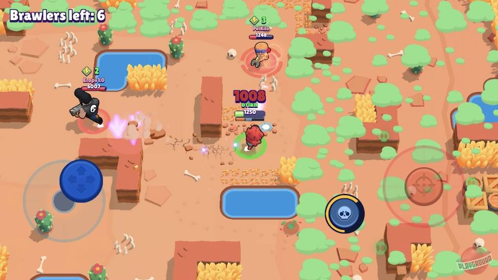
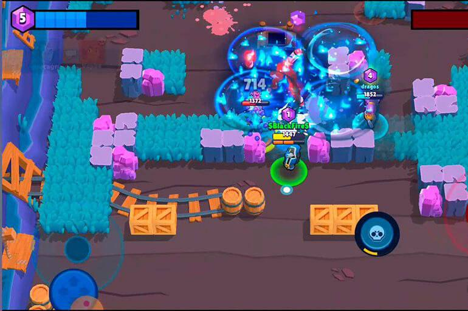
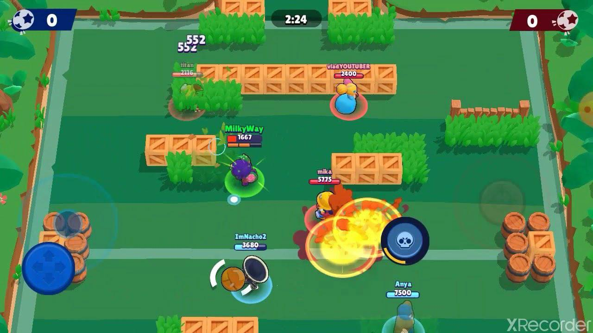
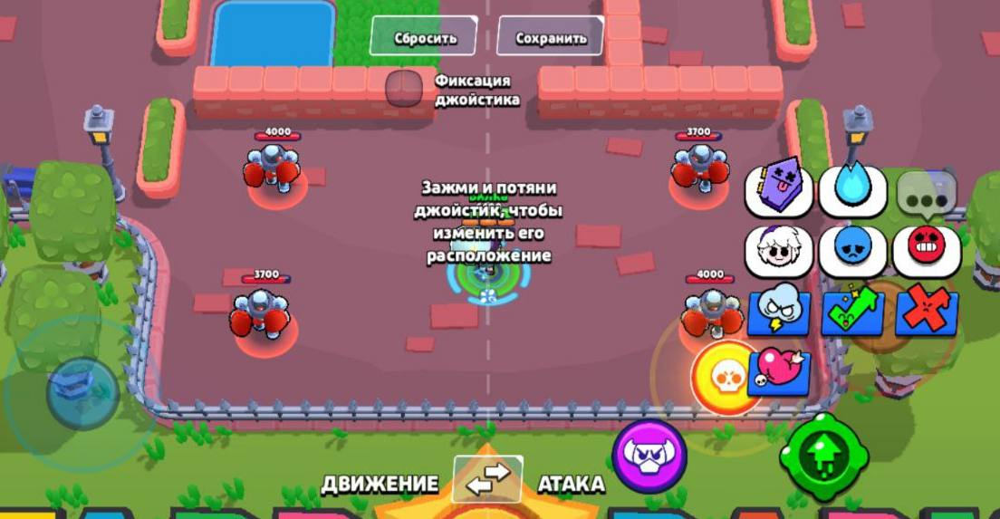
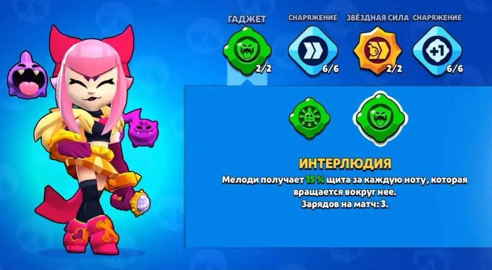
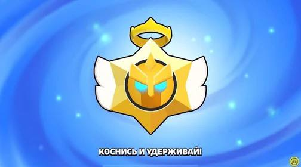
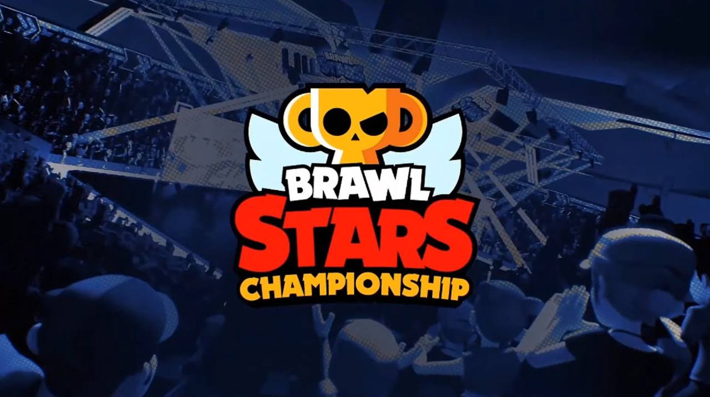

Игровой процесс
Цель игрока — продвигаться по игровой трофейной дороге, участвовать в боях и открывать новых персонажей. Геймплей сосредоточен на командной игре, где необходимо побеждать других игроков или ИИ.
Режимы игры
Столкновение
Режим в жанре королевской битвы. Побеждает последний выживший среди 10 игроков или последняя команда.
Захват кристалов
Собирай кристаллы, появляющиеся в центре карты, или отбирай их у врагов! Удержи 10 кристаллов до конца обратного отсчёта.
Броубол
Забей гол в ворота противника! Матч заканчивается по истечении времени или после двух голов.
Управление
Вы управляете вашим персонажем, нажимая на кнопки и манипулируя джойстиками. Расположение управления можно настроить.
Гаджеты и улучшения
Бойцы могут получить гаджеты, звёздные силы и снаряжение для усиления. Гаджеты дают уникальные способности, а звёздные силы предоставляют пассивные бонусы.
Призы Старр
Призы Старр — система наград за победы. Чем выше редкость приза, тем лучше награда.
Мировые турниры
Игра активно поддерживает киберспортивные соревнования. Узнайте больше о турнире 2024 года здесь.
